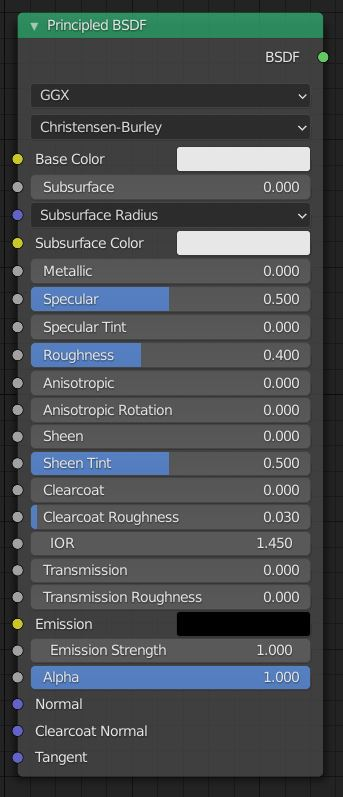
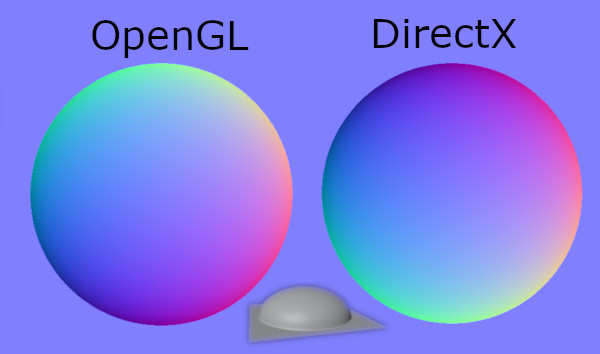

Ana Sayfa
Yeteneklerimiz
* 3d veya 2d masaüstü, mobil veya web için her kalitede oyun yapılır.
* İstenilen seviyede masaüstü uygulama ve mobil uygulama yapılır.
* 3d animasyon, efekt, vfx, yapılır.
* mimari, ürün göselleştirme veya 3d baskı için ölçülü modelleme yapılır.
*3d baskı için mekanik tasarım yapılır.
Ömer Kimdir
19 yaşında üniversiteye hazırlanan biriyim.
Daha önce bir animasyon şirketinde 2,5 ay çalıştım. Unity ve blender
programlarını çok iyi derdecede biliyorum. Bunun
yanında c# ve python programlama dillerinde bir çok proje geliştirdim. java, c++, c, html,
javascript
gibi dillerde küçük projeler geliştirdim. Sektörü takip edebilecek seviyede ingilizcem var.
İlgilendiğim diğer alanlar arasında cnc tenolojileri, arduino, linux, raspberry pi ve popüler
bilimin her dalı bulunmakta.
Gelecekte yapacaklarım arasında, ağır iş yapan 4 bacaklı robot köpekleri açık kaynak ve ucuz bir
şekilde topluma katkı için sunmak var.
Makaleler
Bazı Blender Addonları
Blender İçinde Olanlar
archimesh (bina yaparken yardımcı)Node Wrangler (node işlerinde bir çok kısayol sağlıyor)
IvyGen (sarmaşık yaparken yadımcı(bunun ağaç için olanı da sapling tree gen. ama modular tree daha iyi ))IvyGen (sarmaşık yaparken yadımcı(bunun ağaç için olanı da sapling tree gen. ama modular tree daha iyi ))
A.N.T.Landspace (dağ yapmaya yarıyor)
Modifier Tools (modifier düzenlerken kolaylık)
Auto Mirror (mirror yaparken sizi bazı ekstra işlerden kurtarıyor)
Bool Tool (bool yaparken sizi bazı ekstra işlerden kurtarıyor)
LoopTools (modellerken kolaylık sağlayan araçları var)
Auto Tile Size (ekran kartı ile render alıyorsan hız arttırıyor)
Rigfy (rigleme yaparken kullanabileceğiniz hazır bir iskelet veriyor)
Dynamic Sky (dinamik olarak değişebilen gökyüzü)
BlenderKit Asset Library (içinde ücretli veya ücretsiz malzemeler ve nesneler olan bir eklenti)
Cell Fracture (nesnenizi kırmaya yarıyor)
Extra Objects (mesh için) (blender mesh oluşturuken eksta mesh şekilleri önerir)
Extra Objects (curve için) (blender curve oluşturuken eksta curve şekilleri önerir)
Ücretliler
extreme pbr (büyük bir material malzeme paketi)auto rig pro (karakter riglerken büyük kolaylık)
uv pack master pro (uv map düzenleme işini otomatik bir şekilde çok iyi yapıyor)
Uv Squares(uv düzenlerken seçilen uv yi düzgünleştiriyor kısayolu alt+e)
hard ops, box cutter veya herhangi bir hard surface modelleme araç kiti (katı yüzey modellerken işe yarayan eklentiler)
paint için "b painter" addon çok iyi diyorlar. Layer painter iyi gözüküyor.armor paint şu an geliştirme aşamasında ama daha sonra bedava olur.)
Moas-Gen (modüler harita tasarlarken işe yarıyor. bu addonu yapan kişinin aynı konu ile alakalı başka addonları da var)
"Tesselator", buna alternatif olarak ücretsiz bir addon da var "Instant Meshes Remesh"
Flip Fluids (sıvı simulasyonları için bir addon ama gerek var mı bilmiyorum)
asset managment (yaptığınız işleri her hangi bir projenizde kullanmak için kaydedebildiğiniz kullanışlı bir araç)
Retopolow (retopoloji yaparken kullanılabilecek çok iyi bir araç)
Ücretsizler
Blender GIS (google erath vb. yerlerden 3d veya 2d harita indirebiliyorsunuz)Instant Meshes Remesh (kaliteli mesh ören bir addon)
Easy Hdri (hdr düzenlerken yardımcı olabiliyor (node sistemine girip aynı şeyi yapabiliyorsunuz))
Kit ops (bazı mekanik çıkartmalar veriyor. onları kullanarak modelleme kolaylığı oluyor)
modelling cloth (ücretli bir eklenti. en son sürümü hatalı olabileceği için bedava.)(kıyafet yaparken kolaylık sağlıyor)
JARCH Vis (bina yapmayı kolaylaştırmak için bir eklenti)
Modular tree (modular tree)(ağaç yapımını kolaylaştıran bir eklenti)
MB-Lab (karakter oluşturmak için çok iyi bir araç seti. içinde bir çok özellik var)
BY-GEN (modelleme yaparken modellerinize tarz katan bir produceral modelling eklentisi)
Lily Surface Scapper (binlece materiale her hangi bir amaç için kullanımı ücretsiz erişim sağlayan bir eklenti )
Import fSpy project (resimdeki kameranın konumunu saptamanızı sağlayan açık kaynak bir uygulama olan fSpy nin yardımcı eklentisi)
fSpy indir
EdgeFlow (3ds Max da olup da blender da olmayan bir modelleme aracını ekler)
MACHIN3tools (makina tarzı modeler modellerken kolaylık olması için araç)
Mesh Data Transfer (meshler arası veri taransferi yapan bir araç. yaşadığım bir sorun olduğunda bunu indirmiştim (sorunu başka şekilde çözmüştüm ama yine de bazı yerlerde işe yarayabilir) )
Animation Nodes (blender programında bir çok yere erişimi olan bir node sistemi. animasyon yapımında veya başka alanlarda kullanılabilir)
Anti-Seam (tekrar etmeye uygun olmayan resimlerin kenarlarını düzenleyen bir eklenti. bu eklentiyi yapan kişinin yaptığı diğer ücretli eklentiler de iyi)
Principled Baker (bake işlemini aşırı kolaylaştıran bir eklenti)
Fast Carve (modelleme yaparken işleri kolaylaştıran bir eklenti. bu eklenti ile başka bazı eklentilere ihtiyaç bile kalmıyor)
Fast Sculpt (çok güzel kısayollar sağlıyor)
jMesh Tools (programa ilginç araçlar ekleyen bir eklenti. gui görünümü bile değişiyor )
jSculp Tools ( sculpt yaparken ekstra araç sağlıyor )
Shortcut VUr (bastığınız tuşun ekranda gözükmesini sağlıyor)
Texel Density Checker (Uv düzenleme işlemlerinde gerçek dünya için boyut ayarlarken kolaylık sağlıyor)
welder (modelleme yaparken iki parça arasına kaynak modelleyebiliyor. isterseniz elinizle de çizebiliyorsunuz)
TexTools (içinde bir çok uv ve bake işlemi barındıran bir addon. Bazı işlemleri geliştiren kişi geliştirmeyi biraktığı için sorun çıkartabiliyor)
3d Bilgisayar Grafikleri
Kısa Tarih
Eskiden bilgisayar grafikleri yazılımla ve işlemciyle sağlanıyordu. Günümüzde ise bu işlemleri çoğunlukla ekran kartları ile yapıyoruz.popüler ekran kartı apileri
Ekran kartları ile iletişimi OpenGl, DirectX, Vulcan gibi yazılım arayüzleriyle sağlıyoruz. DirectX, windows ve Xbox için microsoft tarafından geliştirilen bir kütüphanedir. Vulcan ise Open gl nin yeni ve gelişmiş Versiyonudur. opengl 2 sürümü de genellikle internet tarayıcılarında kullanılmaktadır. Vulcan DirextX performansına denk performans göstermekte ve çapraz platform çalışmaktadır.Texture Çeşitleri
Texture çeşitlerini göstermeden önce size principled shaderdan bahsetmek istiyorum. principled shader doğadaki tüm yüzeyleri simüle etmek için disney mühendisteri tarafından geliştirilen bir standarttır. günümüzde bazı oyun motorları performans için bu standartı karşilamasada genel olarak bu standarta benzemektedir. shader da ışığın nesneyle nasıl etkileşime gireceğini belirleyen koddur ve genellikle ekran kartı için yazılırlar, kameranın ışığı nasıl alacağını belirleyen koda da post processing denmektedir.
base color (Diffuse veya Albedo da denmektedir.)
Objenin rengini belirler.subsurface
Objenin içinden geçen sızan ışığı belirler. el fenerini elimizle kapatınca elimizin kırmızı görünmesi gibi.(cilt gölgelendiricilerinde kullanılır)metallic (metalness de denmektedir)
Objenin metal olup olmadığını belirler. metallerin en belirgin farkı ışığı hiç emmemeleri ve geri yansıtırken kendi renklerinde yansıtmalarıdır.specular
Objenin ne kadar yansıtıcı oldduğunu belirler bazı programlarda sadece specular kullanılırken bazılarında specular yerine metallic kullanılmaktadır.specularTint
Maddeden gelen yansımaya madde renginden karıştırılacağını belirler.roughness
Maddenin yüzeyinin ne kadar pürüzlü olacağını belirler. Glossy map bunun tam tersidir.anisotropic
Maddeye tornada işenmiş havası verir.sheen
Bakış açısına göre değişen yansıma katsayısını ayarlar.clearcoat
Maddenin üzerine cila sörülmüş havası verir.IOR
Işığın ne kadar fazla kırılacağını belirler. (büyütecin ışığı kırarak görüntüyü büyütmesi gibi.)transmission
Maddenin içinden ışık geçip geçmeyeceğini belirler. (Cam veya jelibon gibi maddeleri yaparken kullanılır.)emission
Maddenin ışık kaynağından bağımsız ışık yaymasını sağlar.alpha
Objenin götüntüden tamamen silinmesini sağlar.normal
Işığın yansıma açılarını belirler. (OpenGl ve DirectX için y eksenleri yani yeşil kanalları terstir. Unity, Godot ve blender openGl, Unreal DirectX kullanır.)
bump
Işığın yansıma açılarını belirler. normal map açısal olarak veri depolarken bu yükseklik olarak veri depolar. (normal map çok daha fazla veri depolayabilir)ambient occulusion
Işık hesaplamalarında kolaylık sağolaması için ışık alamayacak girinti yerlerin önceden hesaplanmış halidir.tangent
Yüzey normalleri hesapalrken kullanılan vektördür.-Bunların Yanında-
displacement
Objenin fiziksel pürüzlerini belirler. texture rgba kanallarında da depolanabilmektedirhdri
Gökyüzü görüntüsü taşır3d displacement
Disploacementten farklı olarak objeyi ileri geri hareket ettirmek yerine tüm eksenlerde hareket ettirmektedirlight map
Işıkların performans için hesaplanıp depolandığı dokudur*bilgi
Farklı dokular için farklı uv haritaları kullanılabilir.Meshler
Meshler fizksel olarak yüzeyleri depolayan verilerdir. depoladıkları bazı veriler *noktalar (vertex)*yönler (normals)
*yüzeyler (faces)
*nokta renkleri (vertex color)
*uv
vertex
3d düzlemdeki pozisyonlardır. Ayrıca mesh içinde shape key(morph da denmektedir) kullanarak doğrusal hareket elde edebilirsiniz. Shape key yerine kemik (bone) de kullanabilirsiniz, (bu size sınırsız hareket imkanı sağlar.) ama bu da oyunda gereksiz kasmaya neden olabilir. (Shape key kullanmakta ram den yer, ama günümüz bol ram li cihazlarında bu daha iyi olabilir.)normals
Her vectexin ışığa nasıl tepki vereceğini belirlemek için bir yönü vardır. Normals bu verileri depolar.faces
Vertexlerin yüzeyler için sıralarını depolar. Her 3 vertex bir yüzey oluşturur. bazı programlar daha fazla vertex kullanarak bir yüzey oluşturur, ama hata çıkamaması için çok vertexli yüzeyleri üçlemeyi unutmayın. Bu duruma bir istisna var, iskelet sitemi olan veya olamyan hareketli meshlerde 3 vertexli yüzey(tris) kullanılması yerine 4 vertexli yüzey kullanılması önerilir. (Bunu yapmak texturedeki kaymaların ve normaldeki bozulmaların önüne geçer.)vertex color
Her vertexe özgü renk verebilirsiniz ve bu renkleri uygun shader ile kullanabilirsiniz. bu denkleri blender gibi programlarla 2d doku üzerine pişirebilirsiniz. (bake)uv
Vertexlerin 2 boyutlu dünyada başka bir pozisyon bilgisini taşır. bu bizim resimleri objelere giydirebilmemizi sağlar. (Bunu kullamak yerine farklı projection yöntemlerini de kullanabilirsiniz.)Post Processing
Işık kameraya geldikten sonra yapılan işlemlerdir.bloom, vignette, motion blur, depth of field, ambient occulusion, anti alising, lens flare gibi işlemler örnek verilebilir.